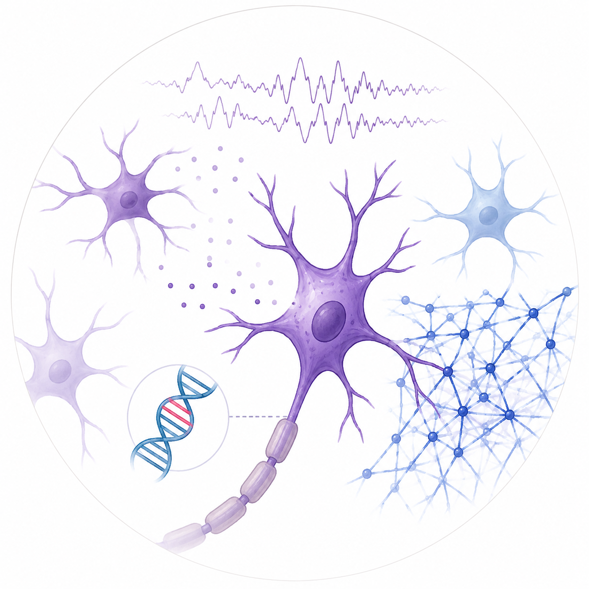
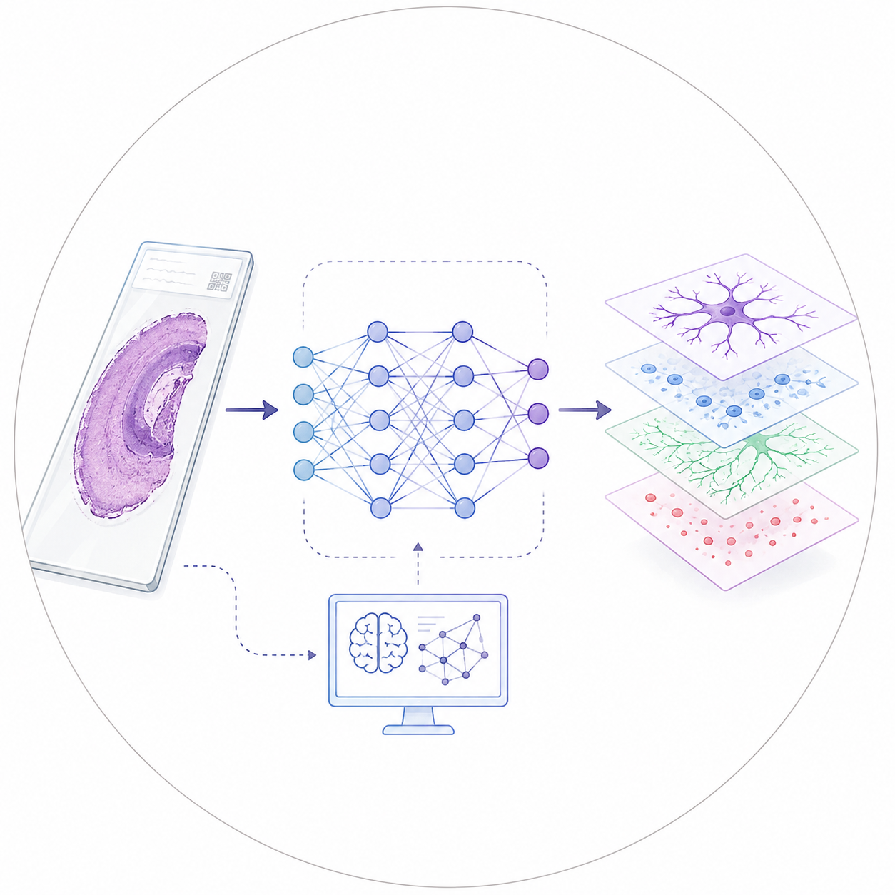
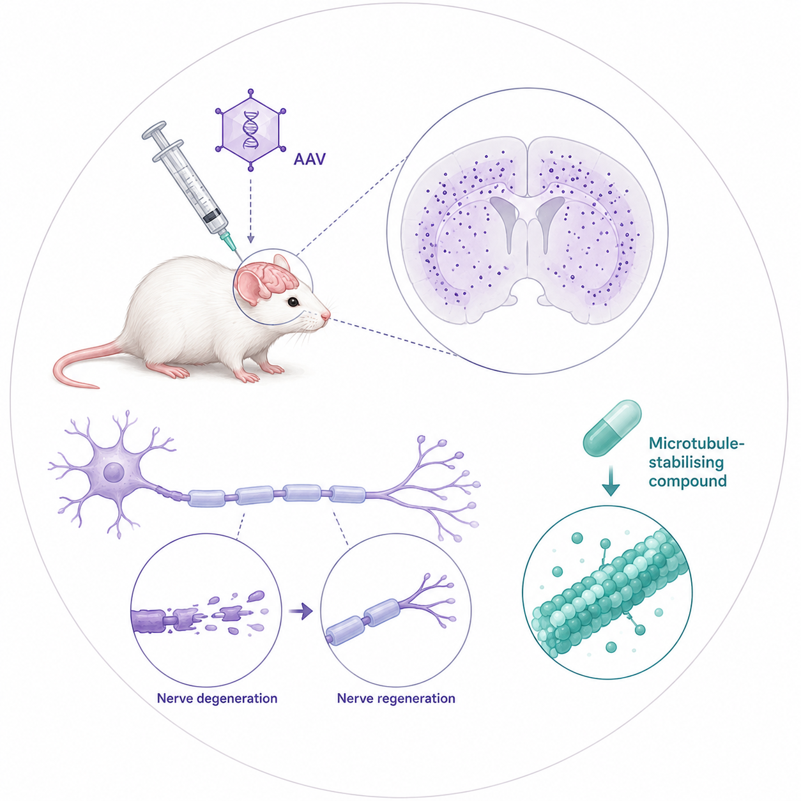
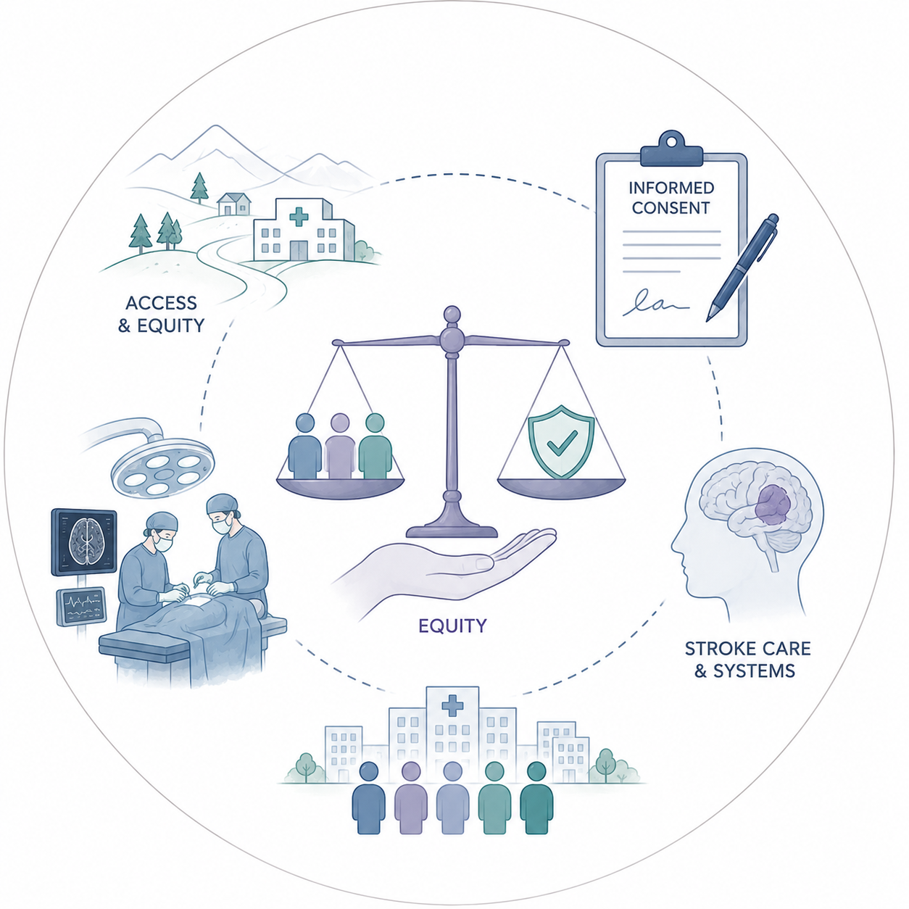
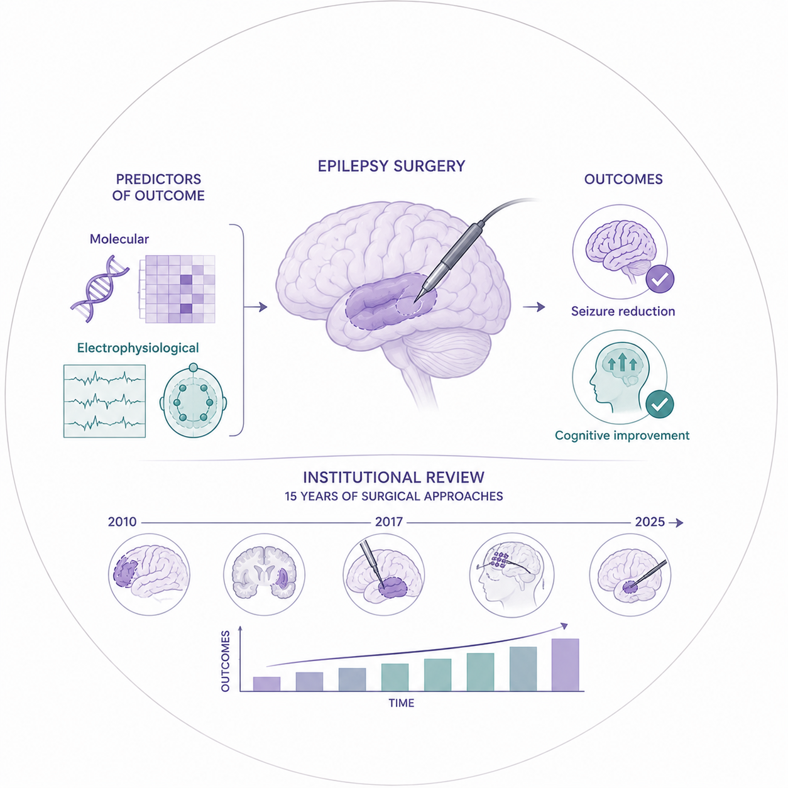

GEISEL SCHOOL OF MEDICINE AT DARTMOUTH
Hong Lab
Neurosurgery, epilepsy, peripheral neuropathy, clinical ethics
We are a neuroscience research group that leverages the connection between the operating room and the laboratory to investigate neurological disease, such as drug-resistant epilepsy and peripheral neuropathy. Our work extends to questions of patient access to neurosurgical interventions and related issues of equity and ethics. We are passionate about rigor, reproducibility, and collaboration in pursuit of discoveries that can one day circle back to patients.
Research Areas
Core areas of focus

AI & Computational Neuroscience

Novel Therapies in Neurological Disease

Neurosurgical Care, Access & Ethics

Epilepsy Surgery & Outcomes
Contact us
If you’re curious about our research, would like to work with us or collaborate, reach out!
Location
Vail Basic Sciences Building
74 College St, Hanover, NH